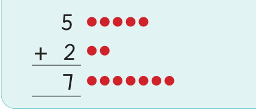
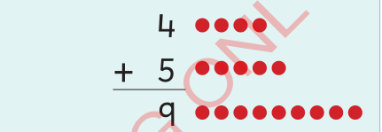

Zoezi la 6
Andika namba inayokosekana katika kila swali.
1.
3 + = 7
11.
1 + = 3
2.
2 + = 5
12.
0 + = 2
3.
8 + = 8
13.
4 + = 9
4.
1 + = 8
14.
5 + = 6
5.
6 + = 9
15.
5 + = 7
6.
+ 6 = 7
16.
6 + = 8
7.
+ 1 = 5
17.
7 + = 9
8.
+ 0 = 7
18.
+ 4 = 6
9.
+ 3 = 6
19.
+ 3 = 8
10.
+ 1 = 4
20.
+ 2 = 4
Kujumlisha namba kwa wima kupata jumla isiyozidi 9
Namba zinaweza kujumlishwa kwa wima.
Mfano wa 1

Mfano wa 2
